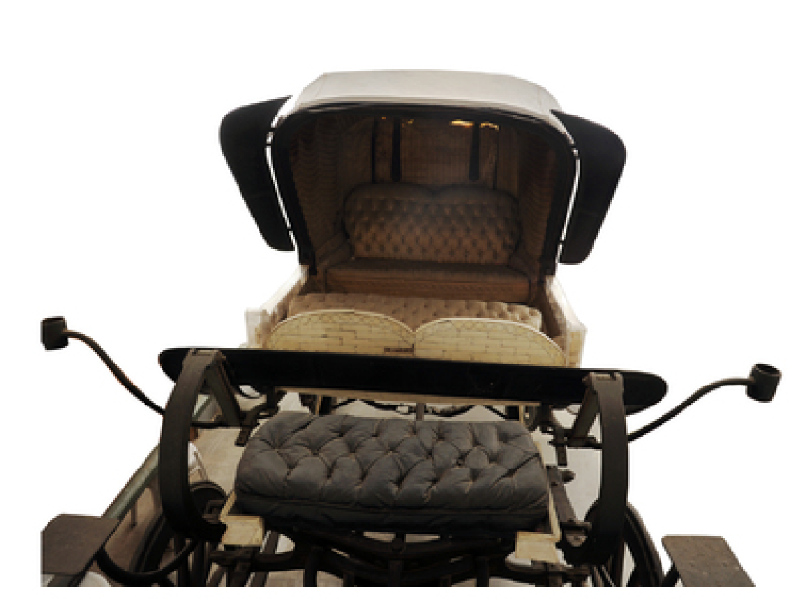
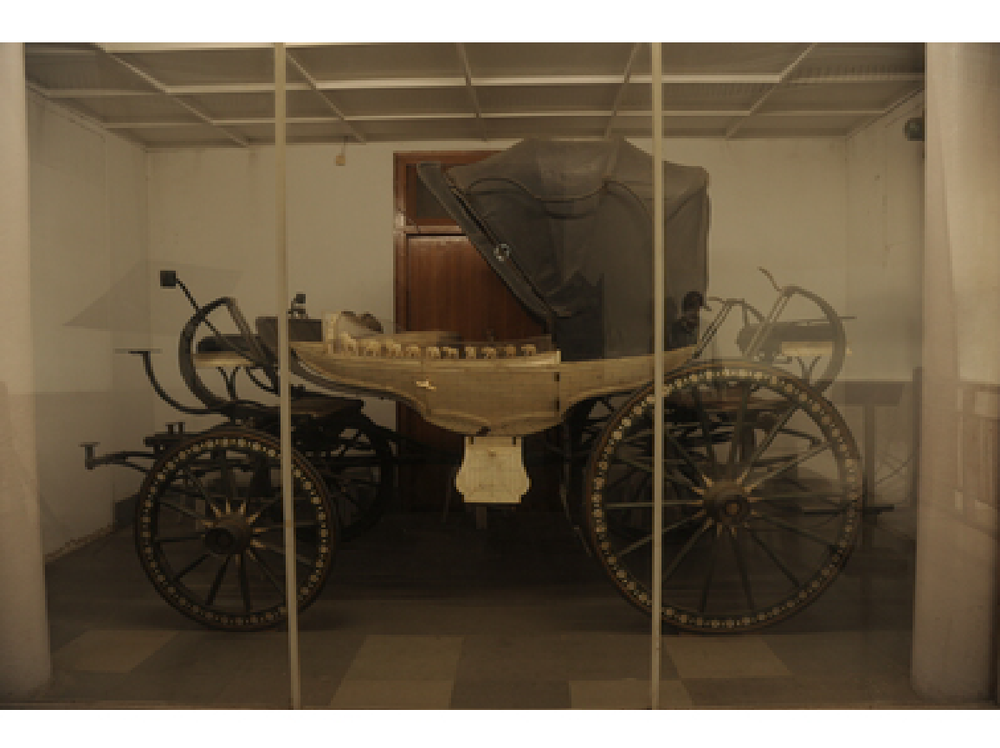

Hindi narration


ACQ-69-1, Ivory Coach or Horse Cart
Country: Rajasthan, India. Period: 19th century. This four-wheeled coach has a foldable leather canopy. Its sides and parts of the lower section are decorated with ivory inlay. Two footboards have ivory knobs and decorated undersides, while floral ivory inlay appears on the outer sides of all four wheels. Two seats for attendants, one in front and one at the back, also have ivory inlay along their sides. Carved ivory figures decorate the doors: seven elephants, two lions, a tiger and a goddess on the right door, and seven elephants, a tiger and a lion on the left. In 1958, the coach was presented to the President of India by His Highness Maharaja Shri Brijendra Sawai Brijendra Singhji Bahadur Jung of Bharatpur. Gift received from the President's Secretariat, Rashtrapati Bhavan, New Delhi.
(हाथीदाँत) बग्गी या घोड़ागाड़ी
ACQ-69-1, ( हाथीदाँत) बग्गी या घोड़ागाड़ी देश: राजस्थान , भारत काल / निर्माण का वर्ष: 19 वीं शताब्दी एक चार पहियों वाली बग्गी (घोड़ागाड़ी) , जिसके ऊपर मोड़कर समेटे जा सकने वाला चमड़े का आवरण है। बग्गी के दोनों किनारों तथा निचले हिस्से के कुछ भागों में हाथीदाँत की जड़ाई का काम किया गया है। बग्गी के दोनों ओर एक-एक फुटबोर्ड लगे हैं , जिनमें हाथीदाँत के खूंटे लगे हैं और उनके निचले हिस्से पर हाथीदाँत की सजावटी जड़ाई की गई है । चारों पहियों के बाहरी हिस्सों पर पुष्पाकार हाथीदाँत की जड़ाई का सुंदर काम है। बग्गी में परिचारकों के बैठने के लिए दो सीटें हैं—एक आगे और दूसरी पीछे। इन दोनों सीटों के किनारों पर भी हाथीदाँत की जड़ाई की गई है। बग्गी के दरवाजों पर नक्काशीदार हाथीदाँत की आकृतियाँ लगी हैं। दाहिने दरवाजे पर एक पंक्ति में सात हाथी , दो सिंह और एक बाघ की आकृतियाँ तथा दाहिनी ओर मुख किए हुए एक देवी की आकृति है। बाएँ दरवाजे पर सात हाथी , एक बाघ और एक सिंह की आकृतियाँ अंकित हैं। यह बग्गी वर्ष 1958 में भरतपुर के महाराजा , महामहिम महाराजा श्री बृजेंद्र सेवई ब्रिजेंद्र सिंहजी बहादुर जंग द्वारा भारत के राष्ट्रपति को भेंट की गई थी। प्राप्ति: राष्ट्रपति सचिवालय , राष्ट्रपति भवन , नई दिल्ली।
(IVORY) কোচ বা ঘোড়ার গাড়ি
ACQ-69-1, (IVORY) কোচ বা ঘোড়ার গাড়ি কোচ বা ঘোড়ার গাড়ি দেশ: রাজস্থান, ভারত সময়কাল : ১৯ শতক চামড়ার তৈরি একটি ভাঁজ করা যায় এমন ছাদ বিশিষ্ট চার চাকার একটি ঘোড়ার গাড়ি। গাড়িটির দু'পাশ এবং নীচের কিছু অংশে হাতির দাঁতের কারুকাজ করা আছে। গাড়িটির দুই পাশে দুটি ফুটবোর্ড রয়েছে, যাতে হাতির দাঁতের নব বসানো, এবং নীচের অংশ হাতির দাঁত দিয়ে সজ্জিত। চারটি চাকারই বাইরের দিকে হাতির দাঁতের ফুলদানি বা ফুলের নকশার কাজ রয়েছে। সহকারীদের বসার জন্য দুটি আসন রয়েছে—একটি সামনে এবং দ্বিতীয়টি পেছনে, যেগুলোর দু'পাশে হাতির দাঁতের কারুকাজ করা। দরজায় হাতির দাঁতে খোদাই করা মূর্তি বসানো রয়েছে: ডান দিকের দরজায় সারিবদ্ধভাবে সাতটি হাতি, দুটি সিংহ, একটি বাঘ এবং তাদের মুখোমুখি এক দেবীর মূর্তি; আর বাম দিকের দরজায় সাতটি হাতি, একটি বাঘ ও একটি সিংহ রয়েছে। ১৯৫৮ সালে ভরতপুরের মহারাজ শ্রী ব্রিজেন্দ্র সওয়াই ব্রিজেন্দ্র সিং বাহাদুর জং এই গাড়িটি ভারতের রাষ্ট্রপতিকে উপহার হিসেবে প্রদান করেন। রাষ্ট্রপতির সচিবালয়, রাষ্ট্রপতি ভবন, নতুন দিল্লি থেকে প্রাপ্ত উপহার।
(હાથીદાંતની) ઘોડા ગાડી
ACQ-69-1, (હાથીદાંતની) ઘોડા ગાડી (કોચ) દેશ: રાજસ્થાન, ભારત સમયગાળો / નિર્માણ વર્ષ: ૧૯મી સદી આ ચાર વ્હીલ વાળી એક કોચ છે જેનું ઉપરનું આવરણ ફોલ્ડ કરી શકાય તેવું ચામડાનું બનેલું છે. આ કોચની બાજુઓ અને તળિયાના ભાગમાં હાથીદાંતની જડતર કામગીરી કરવામાં આવી છે. બંને બાજુએ ફૂટબોર્ડ, હાથીદાંતના બટનો અને ફૂલોના નકશીદાર કામ જોવા મળે છે. સેવકો માટે આગળ અને પાછળ બે બેઠકો છે. દરવાજા પર હાથીદાંતની કોતરેલી આકૃતિઓ છે: જમણે સાત હાથી, બે સિંહ, એક વાઘ અને દેવી, જ્યારે ડાબે સાત હાથી, એક વાઘ અને એક સિંહ છે. આ કોચ ૧૯૫૮માં ભરતપુરના મહારાજા શ્રી બ્રિજેન્દ્ર સવાઈ બ્રિજેન્દ્ર સિંહજી બહાદુર જંગે ભારતના રાષ્ટ્રપતિને ભેટ આપી હતી.
(IVORY) कोच किंवा हॉर्स कार्ट
ACQ-69-1, (IVORY) कोच किंवा हॉर्स कार्ट देशः राजस्थान, भारत काळ / निर्मितीचे वर्ष : 19 वे शतक दुमडता येण्याजोगे चामड्याचे छत असलेली एक चार चाकी बग्गी आहे. बग्गीच्या बाजूंना आणि तळाच्या काही भागावर हस्तिदंताचे जडावकाम केलेले आहे. चारही चाकांच्या बाहेरील बाजूस हस्तिदंताचे फुलांचे जडावकाम केलेले आहे. सेवकांसाठी दोन बैठका आहेत. दरवाजांवर हस्तिदंताच्या कोरीव आकृत्या आहेत: उजव्या दरवाजावर सात हत्ती, दोन सिंह, एक वाघ आणि देवी, तर डाव्या दरवाजावर सात हत्ती, एक वाघ आणि एक सिंह आहे. ही बग्गी 1958 मध्ये भरतपूरच्या महाराजांनी भारताच्या राष्ट्रपतींना भेट म्हणून दिली होती.
ہاتھی دانت سے مزین شاہی کوچ
ACQ-69-1 ہاتھی کے دانت سے مزین شاہی کوچ یا گھوڑا گاڑی، راجستھان، ہندوستان۔ یہ چار پہیوں والی کوچ ہے، جس کے اوپر چمڑے کی کھلنے اور بند ہونے والی چھت لگی ہوئی ہے۔ کوچ کے اطراف اور نچلے حصے پر ہاتھی دانت کی جڑائی کی گئی ہے۔ چاروں پہیوں کے بیرونی حصوں پر پھولوں کے نقش کے ساتھ ہاتھی دانت کا نفیس کام کیا گیا ہے۔ دروازوں پر ہاتھی دانت سے تراشے گئے نقش موجود ہیں۔ یہ کوچ 1958ء میں بھرت پور کے مہاراجہ کی طرف سے صدرِ ہند کو تحفے کے طور پر پیش کی گئی تھی۔
ఏనుగు దంతపు కోచ్ లేదా గుర్రపు బండి
ACQ-69-1 ఏనుగు దంతంతో అలంకరించిన నాలుగు చక్రాల గుర్రపు బండి ఇది. రాజస్థాన్లో 19వ శతాబ్దంలో తయారైన ఈ బండికి మడతపెట్టగల తోలు పైకప్పు ఉంది. పక్కలు, అడుగు భాగం, ఫుట్బోర్డులు, చక్రాలు మరియు తలుపులపై ఏనుగు దంతపు అలంకరణలు ఉన్నాయి. 1958లో భరత్పూర్ మహారాజు ఈ బండిని భారత రాష్ట్రపతికి బహుమతిగా ఇచ్చారు.
யானைத்தந்தத்தால் ஆன குதிரை வண்டி
ACQ-69-1 யானைத்தந்த வேலைப்பாடுகளுடன் கூடிய ராஜஸ்தானைச் சேர்ந்த 19ஆம் நூற்றாண்டு நான்கு சக்கர குதிரை வண்டி இது. மடிக்கக்கூடிய தோல் கூரை, இருபுறங்களிலும் யானைத்தந்த அலங்காரம், பூ வேலைப்பாடுகளுடன் கூடிய சக்கரங்கள் மற்றும் கதவுகளில் செதுக்கப்பட்ட உருவங்கள் உள்ளன. 1958ஆம் ஆண்டு பரத்பூர் மகாராஜாவால் இந்திய குடியரசுத் தலைவருக்கு வழங்கப்பட்டது.
ಆನೆ ದಂತದ ಕೋಚ್ ಅಥವಾ ಕುದುರೆ ಬಂಡಿ
ACQ-69-1, ರಾಜಸ್ಥಾನದಲ್ಲಿ 19ನೇ ಶತಮಾನದಲ್ಲಿ ನಿರ್ಮಿಸಿದ ನಾಲ್ಕು ಚಕ್ರಗಳ ಕೋಚ್ ಇದು. ಮಡಚಬಹುದಾದ ಚರ್ಮದ ಛಾವಣಿ ಮತ್ತು ಬದಿಗಳು, ಚಕ್ರಗಳು, ಫುಟ್ಬೋರ್ಡ್ಗಳು ಹಾಗೂ ಬಾಗಿಲುಗಳಲ್ಲಿ ಆನೆ ದಂತದ ಅಲಂಕಾರಗಳಿವೆ. 1958ರಲ್ಲಿ ಭರತ್ಪುರದ ಮಹಾರಾಜರು ಈ ಕೋಚ್ ಅನ್ನು ಭಾರತದ ರಾಷ್ಟ್ರಪತಿಗಳಿಗೆ ಉಡುಗೊರೆಯಾಗಿ ನೀಡಿದರು.
ആനക്കൊമ്പ് പതിച്ച കുതിരവണ്ടി
ACQ-69-1, രാജസ്ഥാൻ, ഇന്ത്യ, പത്തൊൻപതാം നൂറ്റാണ്ട്. മടക്കി വെക്കാവുന്ന ലെതർ മേൽക്കൂരയുള്ള നാല് ചക്രങ്ങളുള്ള കുതിരവണ്ടിയാണിത്. വശങ്ങളിലും ചക്രങ്ങളിലും വാതിലുകളിലും ആനക്കൊമ്പ് കൊത്തുപണികളും ജഡാവുപണികളും കാണാം. 1958ൽ ഭരത്പൂർ മഹാരാജാവ് ഇത് ഇന്ത്യയുടെ രാഷ്ട്രപതിക്ക് സമ്മാനിച്ചു.
(ହାତୀଦାନ୍ତ) କୋଚ୍ କିମ୍ବା ଘୋଡ଼ା ଗାଡ଼ି
ACQ-69-1, ରାଜସ୍ଥାନ, ଭାରତ, ଉନବିଂଶ ଶତାବ୍ଦୀର ଏହି ଚାରି ଚକିଆ କୋଚ୍ର ଉପର ଭାଗ ଚମଡ଼ାର ଏବଂ ମୋଡ଼ି ବନ୍ଦ କରାଯାଇପାରେ। ପାର୍ଶ୍ୱ, ଫୁଟ୍ବୋର୍ଡ, ଚକ ଓ ଦ୍ୱାରରେ ହାତୀଦାନ୍ତର ଜଡ଼ାଇ ଏବଂ ଖୋଦେଇ କାମ ରହିଛି। ୧୯୫୮ରେ ଭରତପୁର ମହାରାଜା ଏହାକୁ ଭାରତର ରାଷ୍ଟ୍ରପତିଙ୍କୁ ଉପହାର ଦେଇଥିଲେ।